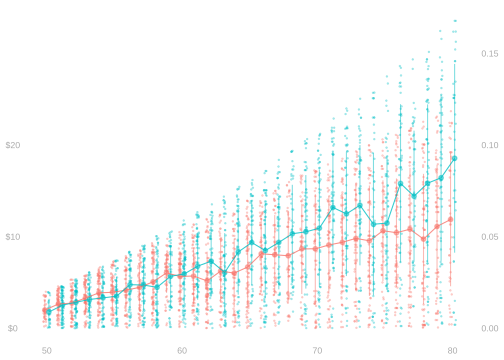
21 Potential Outcomes and Causality
A Campaign Finance Example
$$ \newcommand{X}{} \newcommand{Y}{}
$$
- Let’s think back to the 2006 Michigan Primary we discussed in our first lecture.
- But instead of mailing letters to increase turnout, we’re trying to get donations.
- We have a population of potential donors: a list of people who donated in 2004.
- We’re considering two ways of contacting them: an email or a phone call.
- We run a pilot study in which we …
- Sample without replacement to select 4000 potential donors from our list
- Flip a coin for each one to choose between an email or call.
- Contact them as dictated by the coin and record their donation.
- The results, broken down by the donor’s age, are shown above.
What We Want From Our Pilot Study

- Calling costs more. We want to know whether it’s worth it.
- We want to know how much higher our average donation would be higher if we called everyone.
- One simple thing we could do is look at the raw difference in mean donations between our two groups.
\[ \color{gray} \begin{aligned} \hat\Delta_{\text{raw}} =\textcolor[RGB]{0,191,196}{\frac{1}{N_1} \sum_{i:W_i=1} Y_i} - \textcolor[RGB]{248,118,109}{\frac{1}{N_0} \sum_{i:W_i=0} Y_i} \approx \textcolor[RGB]{0,191,196}{8.64} - \textcolor[RGB]{248,118,109}{7.02} \approx 1.62 \end{aligned} \]
- Do you think this works?
What This Lecture Is About
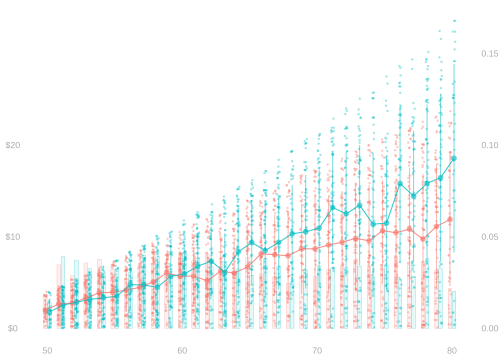
- We’re going to work out how to answer to ‘what if’ questions like this.
- You can think of them as questions about causality.
- The difference between what would happen if we call vs if we email is the effect of calling
- (instead of emailing).
- You’ll learn …
- How to describe effects in formal mathematical language.
- How to use randomization to get unbiased estimates of those effects.
- What this has to do with covariate shift.
Analyzing Randomized Experiments
The Potential Outcomes Formalism

| \(j\) | \(x_j\) ` | \(y_j(1)\) | \(y_j(0)\) | \(\tau_j\) |
|---|---|---|---|---|
| 1 | 55 | 6 | 2 | 4 |
| 2 | 55 | 0 | 0 | 0 |
| 3 | 55 | 4 | 1 | 3 |
| 4 | 75 | 7 | 7 | 0 |
| 5 | 75 | 8 | 4 | 4 |
| 6 | 75 | 2 | 0 | 2 |
- To reason about cause and effect formally, we use potential outcomes.
- \(\textcolor[RGB]{248,118,109}{y_j(0)}\) is the amount person \(j\) would donate if they were emailed.
- \(\textcolor[RGB]{0,191,196}{y_j(1)}\) is the amount person \(j\) would donate if they were called.
- Terminology. We call the actions we can take treatments.
- Each individual in our population has a potential outcome for each treatment.
- In this case, we have two treatments and therefore two potential outcomes—a pair—for each individual.
- Each individual’s potential outcomes are drawn as a connected pair of dots, one red and one green.
- How much higher our average donation would be if we called everyone vs. if we emailed everyone.
- Question. How do we write our target in terms of these potential outcomes?
\[ \color{gray} \begin{aligned} \text{target} = \textcolor[RGB]{248,118,109}{\frac 1m \sum_{j=1}^m y_j(1)} - \textcolor[RGB]{0,191,196}{\frac 1m \sum_{j=1}^m y_j(0)} = \frac1m \sum_{j=1}^m \tau_j \quad \text{for} \quad \tau_j = y_j(1) - y_j(0) \end{aligned} \]
- We call the differences \(\tau_j\) an individual treatment effects.
- \(\tau_j\) is the effect of calling (vs. emailing) person \(j\) in our population.
- We call the average of these individualized effects the average treatment effect.
Potential Outcomes as Functions
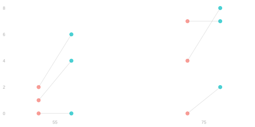
| \(j\) | \(x_j\) ` | \(y_j(1)\) | \(y_j(0)\) | \(\tau_j\) |
|---|---|---|---|---|
| 1 | 55 | 6 | 2 | 4 |
| 2 | 55 | 0 | 0 | 0 |
| 3 | 55 | 4 | 1 | 3 |
| 4 | 75 | 7 | 7 | 0 |
| 5 | 75 | 8 | 4 | 4 |
| 6 | 75 | 2 | 0 | 2 |
- It’s convenient to think of each individual’s potential outcomes as one function instead of two values.
- \(y_1(\cdot)\) is the function defined like this. \[ y_1(w) = \begin{cases} \underset{\textcolor[RGB]{192,192,192}{y_1(1)}}{6} & \text{if } w=1 \\ \underset{\textcolor[RGB]{192,192,192}{y_1(0)}}{2} & \text{if } w=0 \end{cases} \]
- \(y_j(\cdot)\) is the function defined like this. The only way the notation really lets us define it.
\[ y_j(w) = \begin{cases} y_j(1) & \text{if } w=1 \\ y_j(0) & \text{if } w=0 \end{cases} \]
- That individual’s realized outcome is …
- the value \(y_j(w_j)\) their potential outcome function returns
- when we plug in the treatment \(w_j\) that they actually receive.
- It works for any number of treatments.
- It’s useful for thinking about random treatments.
- If \(W\) is a random variable taking on \(k\) values, so is \(y_j(W)\).
- The alternative is to write \(1_{=1}(W)y_j(1) + 1_{=0}(W)y_j(0)\) where we’d write \(y_j(W)\).
- Or more generally \(\sum_w 1_{=w}(W)y_j(w)\).
- In function terms, that’s using the indicator trick everywhere instead of just where we need it.
- People do it, but it tends to make things more difficult than they need to be.
- Suppose \(W\) is a coin flip: a random variable taking on the values \(0\) and \(1\) with equal probability.
- Write out a table describing the joint distribution of \(W\) and \(y_3(W)\).
- Step forward a slide to see the solution. It’ll be on the right, so write yours on the left.
| \(\text{probability}\) | \(W\) | \(y_3(W)\) |
|---|---|---|
| 1/2 | 0 | 1 |
| 1/2 | 1 | 4 |
The Fundamental Problem of Causal Inference
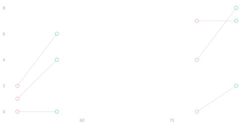
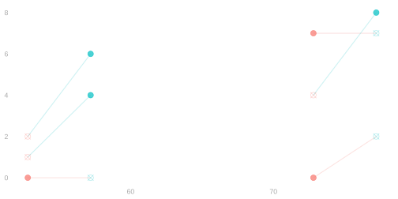
| \(j\) | \(x_j\) | \(y_j(1)\) | \(y_j(0)\) | \(\tau_j\) | \(w_j\) | \(y_j(w_j)\) |
|---|---|---|---|---|---|---|
| 1 | 55 | 6 | 2 | 4 | 1 | 6 |
| 2 | 55 | 0 | 0 | 0 | 0 | 0 |
| 3 | 55 | 4 | 1 | 3 | 1 | 4 |
| 4 | 75 | 7 | 7 | 0 | 0 | 7 |
| 5 | 75 | 8 | 4 | 4 | 1 | 8 |
| 6 | 75 | 2 | 0 | 2 | 0 | 0 |
| \(j\) | \(x_j\) | \(y_j(1)\) | \(y_j(0)\) | \(\tau_j\) | \(w_j\) | \(y_j(w_j)\) |
|---|---|---|---|---|---|---|
| 1 | 55 | 6 | 2 | 4 | 1 | 6 |
| 2 | 55 | 0 | 0 | 0 | 0 | 0 |
| 3 | 55 | 4 | 1 | 3 | 1 | 4 |
| 4 | 75 | 7 | 7 | 0 | 0 | 7 |
| 5 | 75 | 8 | 4 | 4 | 1 | 8 |
| 6 | 75 | 2 | 0 | 2 | 0 | 0 |
- In concrete terms.
- You can’t both call and not call someone.
- So you can see what happens when you call someone or what happens when you don’t, but not both.
- In abstract terms.
- Each individual can take only one treatment.1
- So only one of each individual’s potential outcomes is realized.
- That means that, even if we can choose everyone’s treatment however we want:
- We can’t calculate anybody’s individual treatment effect \(\tau_j = y_j(1) - y_j(0)\).
- And we can’t calculate the average of them, \(\bar\tau = \frac1m \sum_{j=1}^m \tau_j\), either.
- Look at the treatments \(w_j\) in the table above. For each individual:
- Fill in the realized outcome \(y_j(w_j)\) for each row in the table.
- Shade in the dot corresponding to the realized outcome in the plot.
- Draw arrows to indicate the individual treatment effects \(\tau_j = y_j(1) - y_j(0)\) in the plot.
- make them point up for positive effects, down for negative effects.
- Step forward a slide to see the solution.
The Fundamental Solution is Randomization
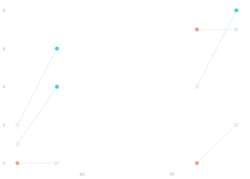
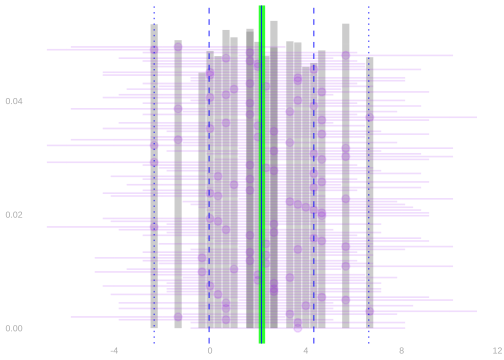
- Step 1. Randomize treatment.
- Shuffle a deck of \(m\) cards labeled 1…m.
- Treat individual \(j\) if the card labeled \(j\) is in the top half of the deck.2
\[ W_j = \begin{cases} 0 & \text{with probability } 1/2 \\ 1 & \text{with probability } 1/2 \end{cases} \qqtext{ and } \sum_{j=1}^m 1_{=w}(W_j) = m/2 \qfor w \in \{0,1\} \]
- Step 2. Compare the mean realized outcome for groups receiving different treatments.
\[ \hat\tau = \frac{1}{m/2} \sum_{j:W_j=1} y_j(W_j) - \frac{1}{m/2} \sum_{j:W_j=0} y_j(W_j) \]
- Above, we see the sampling distribution3 of this estimator \(\hat\tau\) with all the usual annotations.
- The target, the average treatment effect \(\bar\tau = \frac1m \sum_{j=1}^m \tau_j\), is drawn in green.
- The sampling distribution’s mean is drawn in blue.
- It looks like our estimator is unbiased. |
Proving Unbiasedness
\[ \begin{aligned} \hat\mu(w) &\overset{\texttip{\small{\unicode{x2753}}}{This is our groups mean.}}{=} \frac{1}{m/2}\sum_{j:W_j=w}y_j(W_j) \\ &\overset{\texttip{\small{\unicode{x2753}}}{We rewrite our subpopulation sums a a sum over the entire population using group indicators.}}{=} \frac{1}{m/2}\sum_{j=1}^m y_j(W_j) \ 1_{=w}(W_j) \\ &\overset{\texttip{\small{\unicode{x2753}}}{We use the indicator trick. $f(W)1_{=w}(W) = f(w)1_{=w}(W)$ for any function $f$.}}{=} \frac{1}{m/2}\sum_{j=1}^m y_j(w) 1_{=w}(W_j). \\ \mathop{\mathrm{E}}[\hat\mu(w)] &\overset{\texttip{\small{\unicode{x2753}}}{distributing the expectation using linearity}}{=} \frac{1}{m/2}\sum_{j=1}^m y_j(w) \ \mathop{\mathrm{E}}[1_{=w}(W_j)] \\ &\overset{\texttip{\small{\unicode{x2753}}}{expectations of indicators are probabilities and we're doing equal-probability randomization: $\mathop{\mathrm{E}}[1_{=w}(W)] = \P(W=w) = 1/2$}}{=} \frac{1}{m/2}\sum_{j=1}^m y_j(w) \ \frac12 \\ &\overset{\texttip{\small{\unicode{x2753}}}{multiplying: $1/(m/2) \times 1/2 = 1/m$}}{=} \frac{1}{m} \sum_{j=1}^m y_j(w) \\ \mathop{\mathrm{E}}[\hat\tau] &\overset{\texttip{\small{\unicode{x2753}}}{distributing the expectation using linearity}}{=} \frac1m \sum_{j=1}^m y_j(1) - \frac1m \sum_{j=1}^m y_j(0) \\ &\overset{\texttip{\small{\unicode{x2753}}}{grouping corresponding terms}}{=} \frac1m\sum_{j=1}^m \underset{\textcolor[RGB]{128,128,128}{\tau_j}}{\{ y_j(1) - y_j(0) \}} = \bar\tau. \end{aligned} \]
- If you want to see a similar proof that applies when we randomize via coin flips instead of shuffling, see Section 25.1.
- We’ll do a proof that applies to both randomization mechanisms in the next section, but it’ll look a little different.
Combining Randomization and Sampling
The Idea
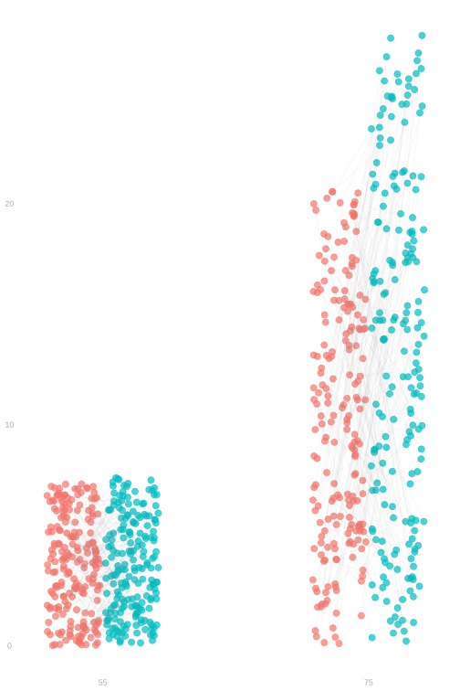
- Let’s look at what happens when we randomize treatment to a sample drawn from our population.
- Let’s start by looking at a subset of our population of potential donors: the ones aged 55 and 75.
- Everyone has two potential outcomes: the amount they donate if untreated (red) and the amount they donate if treated (green)
Randomization and Sampling

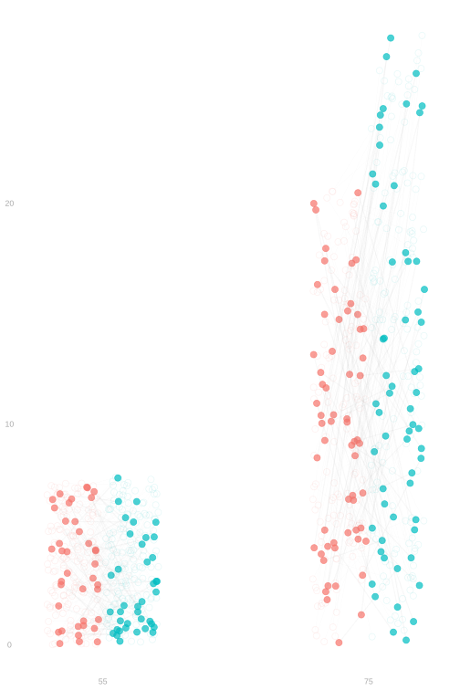
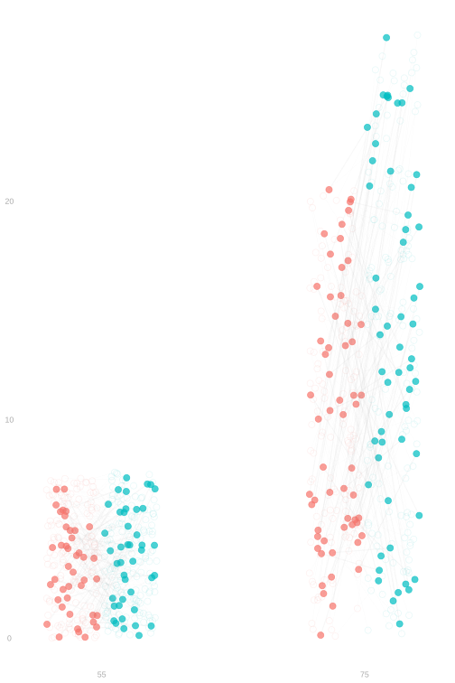
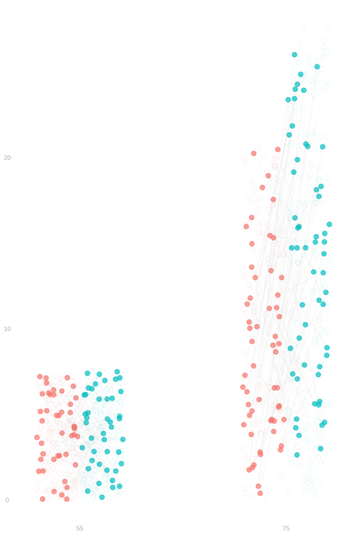
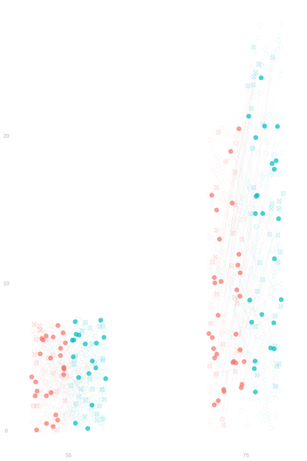
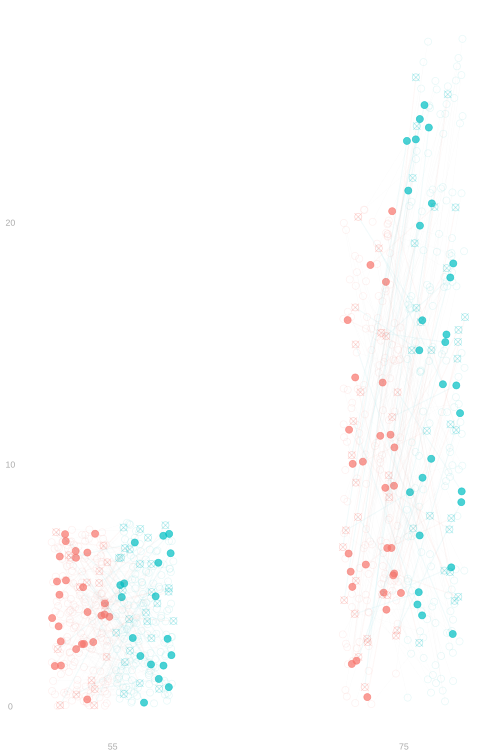
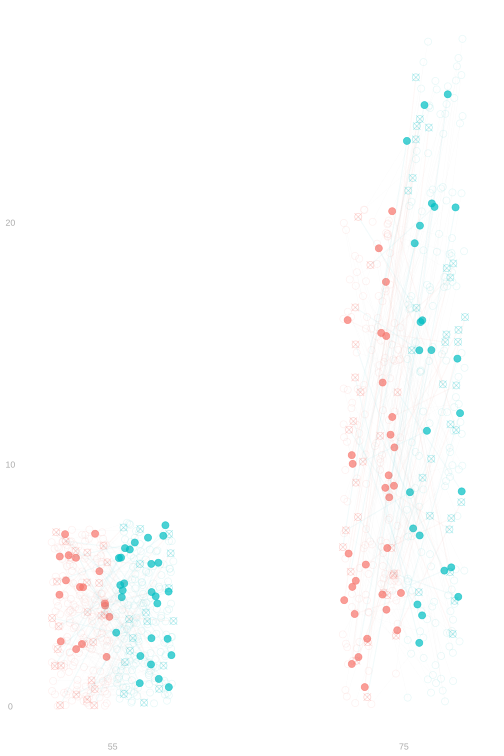
- We start with two potential outcomes for each person in our population.
- Those are the connected dots we see in the plot.
- Then we sample from our population.
- The people who aren’t sampled fade out in the plot.
- This is random. So different things happen each time we do it.
- Each person in our sample flips a coin to determine whether they’re treated.
- ⦻ marks the potential outcomes that don’t happen.
- This is random, too.
What Happens to the Means
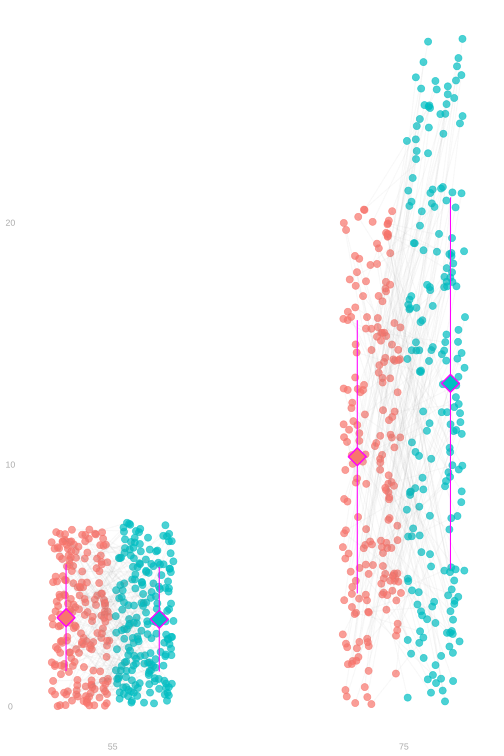
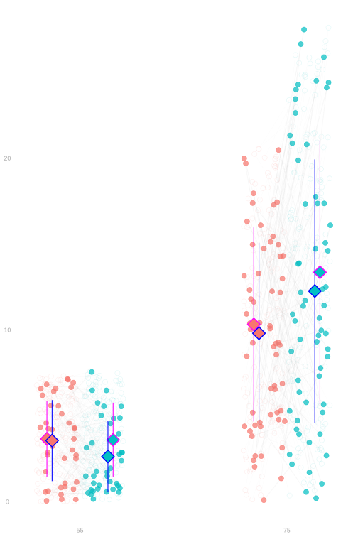
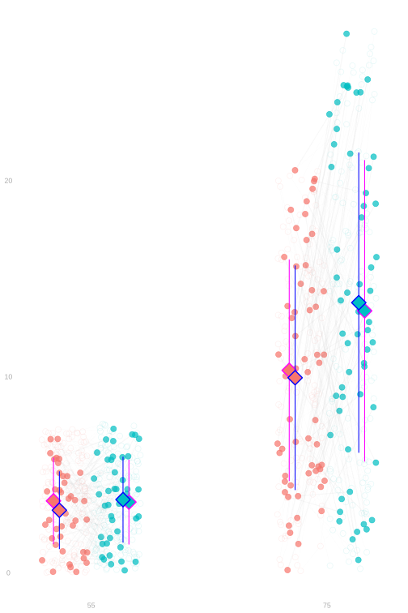
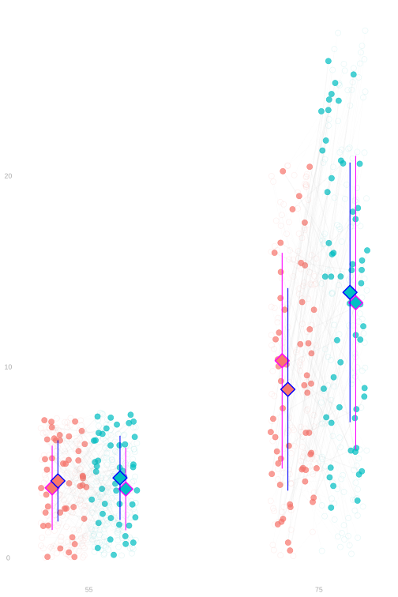
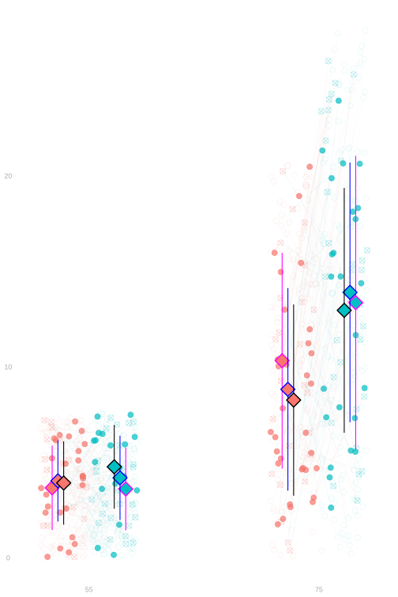
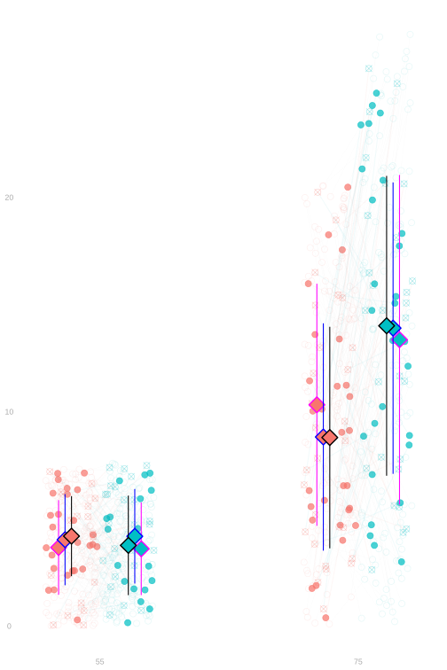
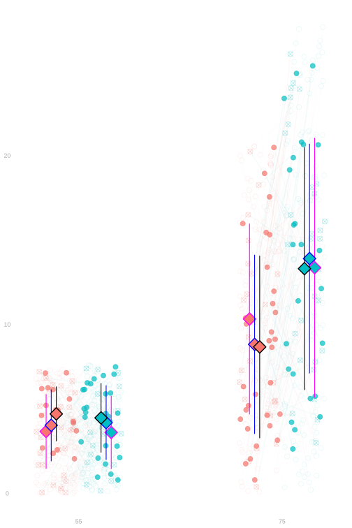
- We start with two potential outcomes for each person in our population.
- Those are the connected dots we see in the plot.
- These have a mean. Often, that’s what we’re interested in.
- Then we sample from our population.
- The people who aren’t sampled fade out in the plot.
- And we can look at the the means of the potential outcomes in the sample. They’re random.
- Each person in the sample flips a coin to determine whether they’re treated.
- ⦻ marks the potential outcomes that don’t happen.
- We can look at the means of people who actually flip ‘heads’ and ‘tails’, too. More randomness.
What Happens to (Not Within-Group) Means
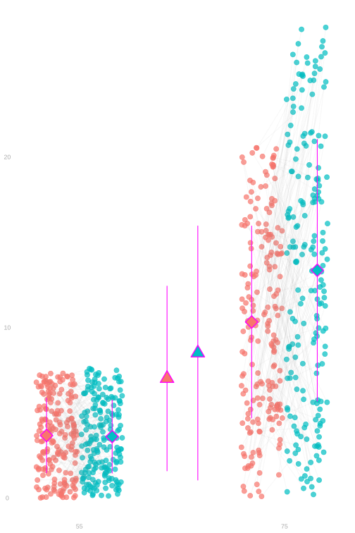
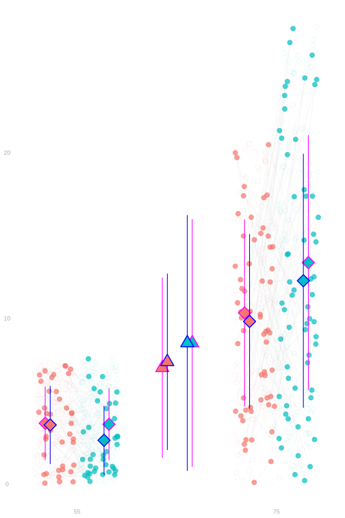
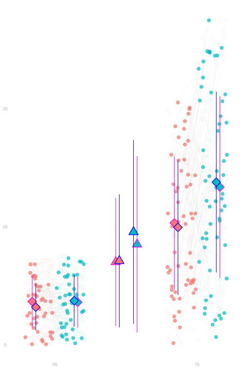
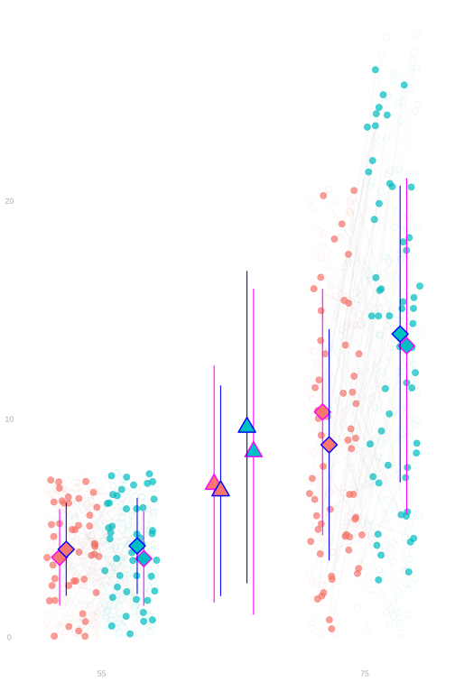
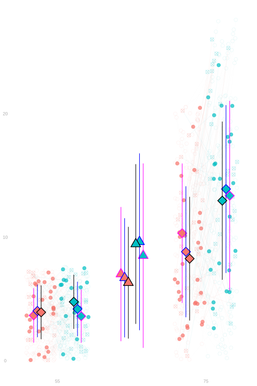
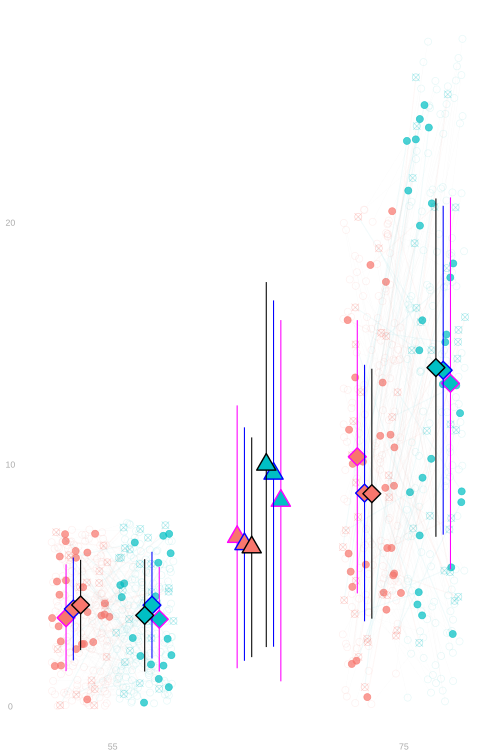
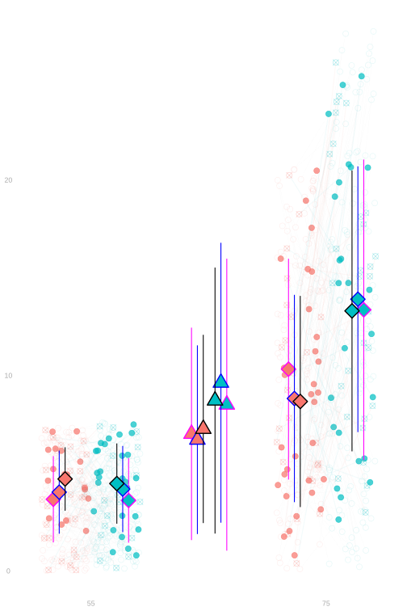
- We start with two potential outcomes for each person in our population.
- Those are the connected dots we see in the plot.
- These have a mean outright—ignoring \(X\). Often, that’s what we’re interested in.
- Then we sample from our population.
- This is random, too.
- These have a mean, too. And it is, of course, random. It changes if our sample changes.
- Each person in the sample flips a coin to determine whether they’re treated.
- ⦻ marks the potential outcomes that don’t happen.
- We can look at the means of people who actually flip ‘heads’ and ‘tails’, too. More randomness.
How different are these means?
Not very. In fact, the means in the red and green subsamples are unbiased estimators of the means of the red and green potential outcomes. \[ \mathop{\mathrm{E}}\qty[\frac{1}{N_w}\sum_{i:W_i=w} Y_i] = \frac{1}{m}\sum_{j=1}^m y_j(w) \qfor N_w = \sum_{i=1}^n 1_{=w}(W_i) \]
Sampling and Randomization
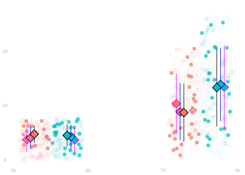
\[ \begin{array}{cccc|cccc} j & W_j & y_j(W_j) & x_j & y_j(1) & y_j(0) & \tau_j \\ \hline 1 & & & 55 & 6 & 5 & 1 \\ 2 & & & 55 & 0 & 0 & 0 \\ 3 & & & 55 & 4 & 4 & 0 \\ 4 & & & 75 & 7 & 0 & 7 \\ 5 & & & 75 & 4 & 0 & 4 \\ 6 & & & 75 & 2 & 0 & 2 \\ \end{array} \]
Let’s review the process that gives us our observed treatment+covariate+outcome triples \((W_1, X_1, Y_1) \ldots (W_n,X_n,Y_n)\).
We draw covariate+potential-outcomes triples \(\{X_i, Y_i(0), Y_i(1)\}\) uniformly-at-random from the population of all such triples \(\{x_1, y_1(0), y_1(1)\}, \ldots, \{x_m, y_m(0), y_m(1)\}\). \[ \{ X_i,Y_i(0), Y_i(1)\} = \{x_J, y_J(0), y_J(1)\} \qfor J=1 \ldots m \qqtext{ each with probability } 1/m \]
We choose treatments \(W_1 \ldots W_n\) by some random mechanism, independent of everything else. These determines the potential outcomes we observe.
\[ Y_i = Y_i(W_i) \qqtext{ for } W_1 \ldots W_n \qqtext{independent of} \{X_1,Y_1(0), Y_1(1)\} \ldots \{X_n, Y_n(0), Y_n(1)\} \]
- What we visualized was a special case in which we …
- used sampling with replacement in Step 1
- used coin flips in Step 2
- What we looked at in the previous section was a special case in which we
- used sampling without replacement in Step 1.4
- used shuffling in Step 2.
Causal Identification
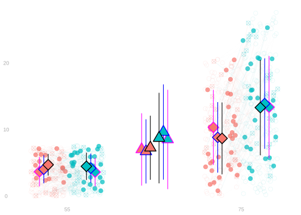
- With this sampling and randomization scheme …
- we can rewrite our potential outcome means …
- as expected values involving the random variables that we observe.
\[ \frac{1}{m}\sum_{j=1}^m y_j(w) = \mathop{\mathrm{E}}[Y_i \mid W_i=w] \]
\[ \begin{aligned} \frac{1}{m}\sum_{j=1}^m y_j(w) &\overset{\texttip{\small{\unicode{x2753}}}{sampling uniformly-at-random}}{=} \mathop{\mathrm{E}}[Y_i(w)] \\ &\overset{\texttip{\small{\unicode{x2753}}}{irrelevance of independent conditioning variables}}{=} \mathop{\mathrm{E}}[Y_i(w) \mid W_i=w] \\ &\overset{\texttip{\small{\unicode{x2753}}}{if we've flipped $W_i=w$, $Y_i(W_i)=Y_i(w)$. It's a bit like the indicator trick.}}{=} \mathop{\mathrm{E}}[Y_i(W_i) \mid W_i=w] \\ &\overset{\texttip{\small{\unicode{x2753}}}{Definition. $Y_i=Y_i(W_i)$.}}{=} \mathop{\mathrm{E}}[Y_i \mid W_i=w] = \mu(w) \end{aligned} \]
- We call this rewriting process identification.
- We’ve ‘identified’ a summary of the potential outcomes if …
- … we have an equivalent formula for it that doesn’t involve potential outcomes.
- We need randomization to have equivalences like this.
Unbiasedness

- This identification result reduces today’s unbiasedness question to one we’ve addressed before: the unbiasedness of column means.
\[ \mathop{\mathrm{E}}[\hat\mu(w)] \overset{\texttip{\small{\unicode{x2753}}}{unbiasedness of column means}}{=} \mu(w) \overset{\texttip{\small{\unicode{x2753}}}{identification}}{=} \mathop{\mathrm{E}}[Y_i(w)] \]
- When we addressed that in Lecture 6, we assumed pairs \((W_i,Y_i)\) were sampled with replacement.
- We’re being more general here, so I’ll give you a direct proof of unbiasedness too. It’s very similar to Lecture 6’s.
\[ \begin{aligned} \mathop{\mathrm{E}}\qty[\frac{1}{N_w}\sum_{i:W_i=w} Y_i ] &\overset{\texttip{\small{\unicode{x2753}}}{via the law of iterated expectations}}{=} \mathop{\mathrm{E}}\qty[ \mathop{\mathrm{E}}\qty[ \frac{1}{N_w}\sum_{i=1}^n Y_i \mid W_1 \ldots W_n] ] \\ &\overset{\texttip{\small{\unicode{x2753}}}{linearity of conditional expectation}}{=} \mathop{\mathrm{E}}\qty[ \frac{1}{N_w}\sum_{i=1}^n \mathop{\mathrm{E}}[Y_i \mid W_1 \ldots W_n] \ 1_{=w}(W_i) ] \\ &\overset{\texttip{\small{\unicode{x2753}}}{indicator trick}}{=} \mathop{\mathrm{E}}\qty[ \frac{1}{N_w}\sum_{i=1}^n \mathop{\mathrm{E}}[Y_i(w) \mid W_1 \ldots W_n] \ 1_{=w}(W_i) ] \\ &\overset{\texttip{\small{\unicode{x2753}}}{irrelevance of independent conditioning variables. The assignments $W_1 \ldots W_n$ are independent of $Y_i(w)$. }}{=} \mathop{\mathrm{E}}\qty[ \frac{1}{N_w}\sum_{i=1}^n \mathop{\mathrm{E}}[Y_i(w)] \ 1_{=w}(W_i) ] \\ &\overset{\texttip{\small{\unicode{x2753}}}{via linearity, i.e. pulling out the constant $E[Y_i(w)]$}}{=} \mathop{\mathrm{E}}[Y_i(w)] \mathop{\mathrm{E}}\qty[ \frac{1}{N_w}\sum_{i=1}^n 1_{=w}(W_i) ] = \mathop{\mathrm{E}}[Y_i(w)]\frac{N_w}{N_w} = \mathop{\mathrm{E}}[Y_i(w)] \\ &\overset{\texttip{\small{\unicode{x2753}}}{sampling uniformly-at-random}}{=} \frac{1}{m}\sum_{j=1}^m y_j(w) \end{aligned} \]
Conditionally Randomized Experiments
What is conditional randomization?
- So far, we have focused on the case that treatment is randomized without looking at anything else.
- Formally: \(W_1 \ldots W_n\) are independent of \(\{X_1,Y_1(0), Y_1(1)\} \ldots \{X_n, Y_n(0), Y_n(1) \}\).
- This is not the only way to randomize!
- Suppose I suspect phone calls to older people to pay off more than calls to younger ones.
- Maybe older people have more money to spend on campaigns.
- Maybe they don’t get as annoyed about getting phone calls as young people .
- I might want to choose the probability a person gets treated (i.e. called) as a function of their age.
- In conditionally randomized experiments, that’s what we do.
- We look at the covariates \(X_1 \ldots X_n\) when we randomize. But only the covariates.
- Formally: \(W_1 \ldots W_n\) are conditionally independent of \(\{Y_1(0), Y_1(1)\} \ldots \{Y_n(0), Y_n(1)\}\) given \(X\).5
- We’ll focus on the case that each \(W_i\) is a coin flip with heads probability depending on \(X_i\).6
The Idea
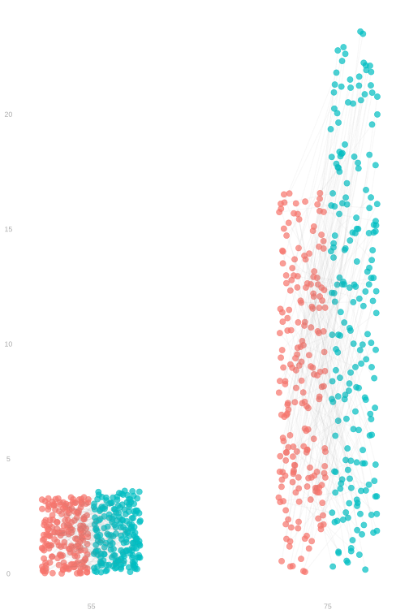
- To make things simple, let’s look at a subset of our population.
- We have grouped everyone by age to give us two age groups—a binary covariate.
- As before, everyone has two potential outcomes— treated and untreated.
Randomization and Sampling

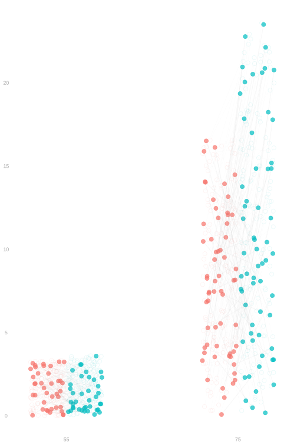
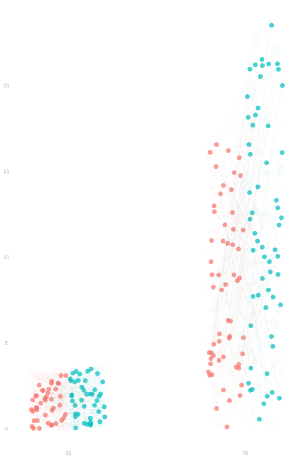
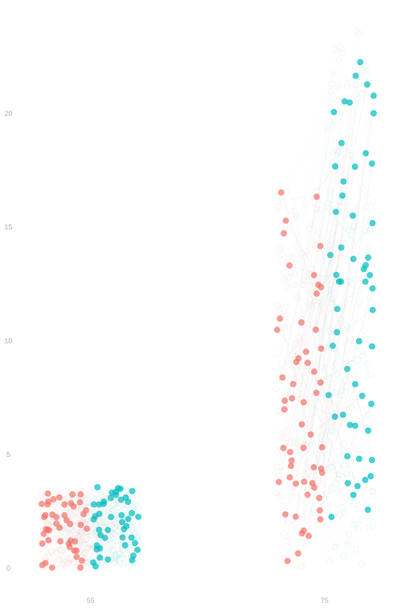
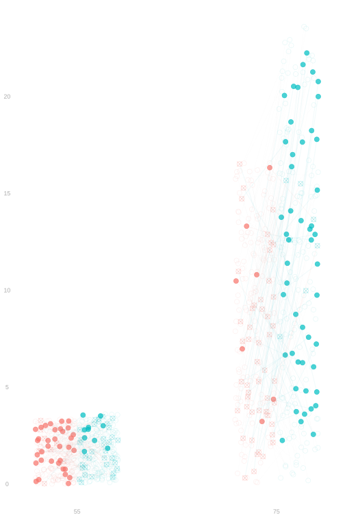
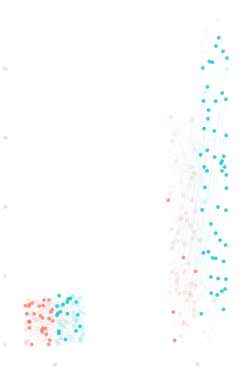
- We start with two potential outcomes for each person in our population.
- Those are the connected dots we see in the plot.
- Then we sample from our population.
- This is random, too.
- Each one flips a weighted coin to determine whether they’re treated. A coin that depends on their age.
- This is random. Different things happen each time.
- But the overall pattern is consistent.
- Most of the green dots are on the right.
- It’s mostly 75-year-olds getting called.
- The heads probability of their coin is 0.87.
- Most of the red dots are on the left.
- It’s mostly 55-year-olds getting emailed.
- The heads probability of their coin is 0.35.
- Most of the green dots are on the right.
What Happens to Within-Group Means
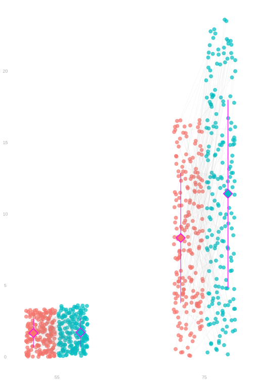
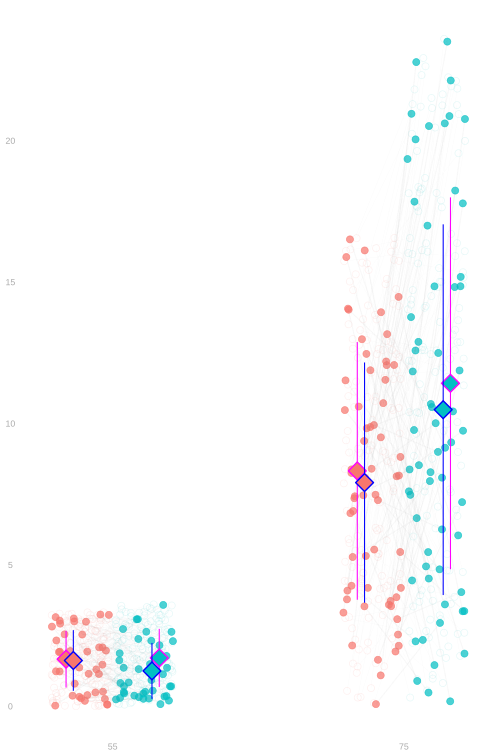
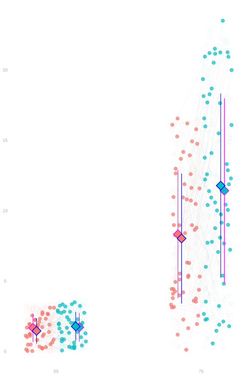
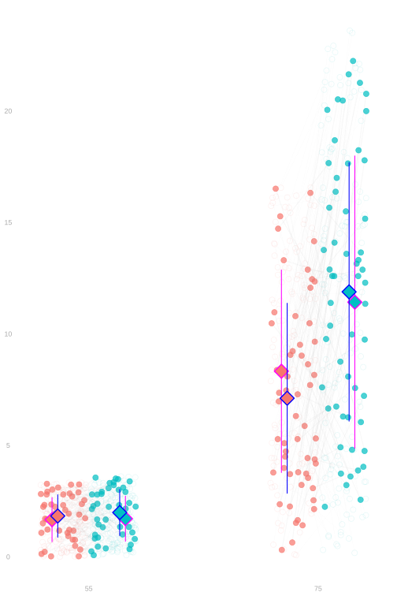
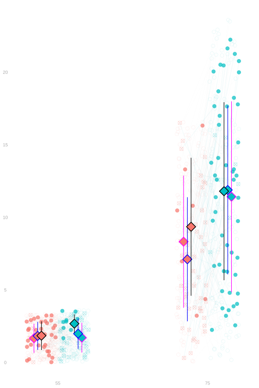
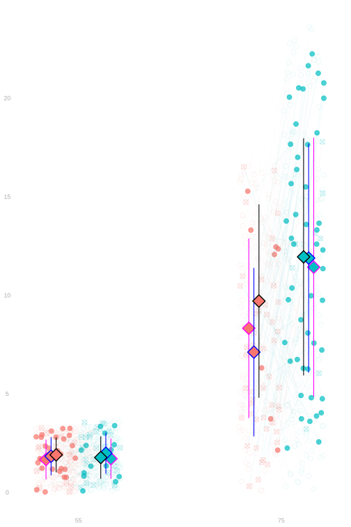
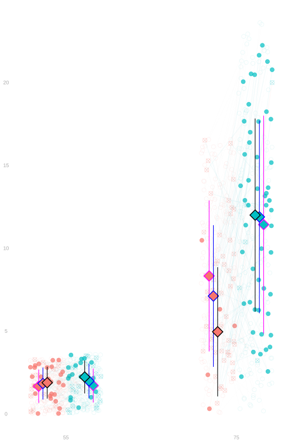
- We start with two potential outcomes for each person in our population.
- Those are the connected dots we see in the plot.
- At each level of \(X\), these potential outcomes have a mean.
- Then we sample from our population.
- This is random, too.
- These have a mean, too. And it is, of course, random. It changes if our sample changes.
- Each person in the sample flips a weighted coin to determine whether they’re treated.
- ⦻ marks the potential outcomes that don’t happen.
- We can look at the means of people who actually flip ‘heads’ and ‘tails’, too. More randomness.
- Our sample has a mean within in group, too. A random one.
How different are these means?
Not very different. Why?
- Because when we look at a single group, nothing has changed.
- What happens in the age=75 group when we flip an 80/20 coin there and a 20/80 coin in the age=55 group …
- … will be the same thing that happens when we flip an 80/20 coin everywhere.
What Happens to (Not Within-Group) Means
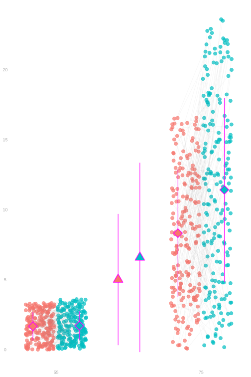
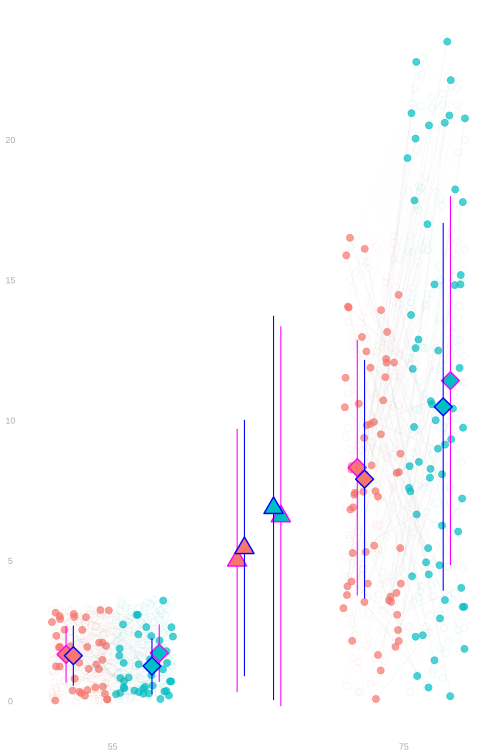
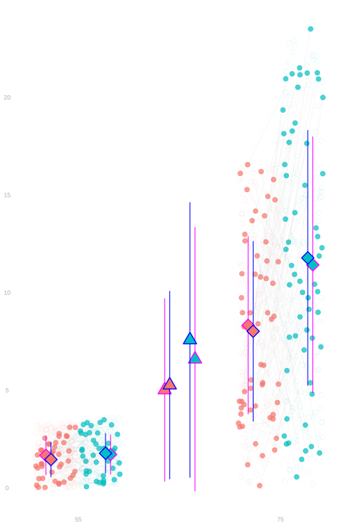
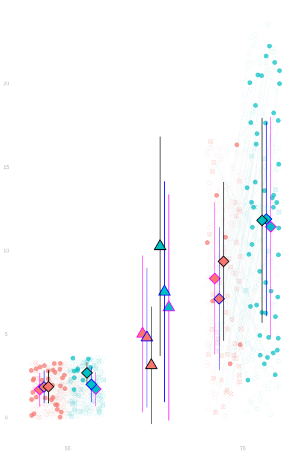
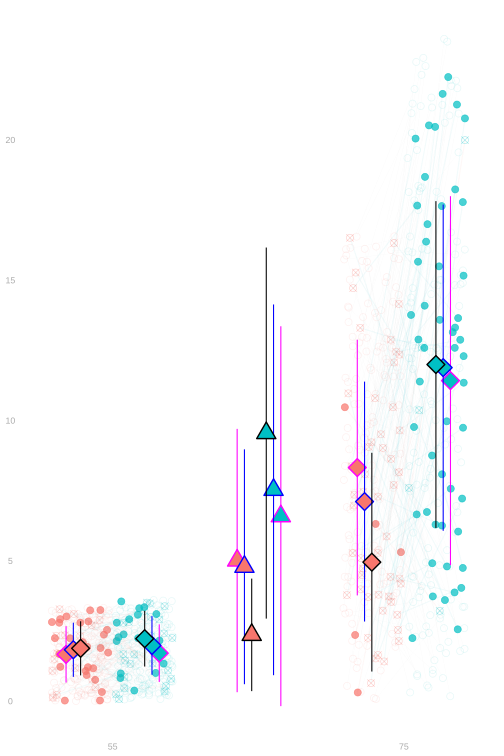
- We start with two potential outcomes for each person in our population.
- Those are the connected dots we see in the plot.
- These have a mean outright—ignoring \(X\). Often, that’s what we’re interested in.
- Then we sample from our population.
- This is random, too.
- These have a mean, too. And it is, of course, random. It changes if our sample changes.
- Each person in the sample flips a weighted coin to determine whether they’re treated.
- ⦻ marks the potential outcomes that don’t happen.
- We can look at the means of people who actually flip ‘heads’ and ‘tails’, too. More randomness.
How different are these means?
The counterfactual and post-randomization means are very different. Why?
Why? Covariate Shift.
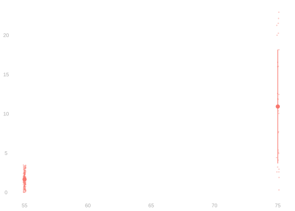
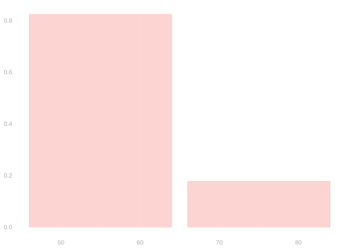
- When we switch from emails to calls, the distribution of ages shifts to the right.
- And the trend is that donations increase with age.
- What does this mean for the raw difference in means?
\[ \color{gray} \begin{aligned} \hat\Delta_{\text{raw}} &= \textcolor[RGB]{0,191,196}{\frac{1}{N_1} \sum_{i:W_i=1} Y_i} - \textcolor[RGB]{248,118,109}{\frac{1}{N_0} \sum_{i:W_i=0} Y_i} \\ &= \sum_x \textcolor[RGB]{0,191,196}{P_{x|1}} \ \textcolor[RGB]{0,191,196}{\hat\mu(1,x)} - \sum_x \textcolor[RGB]{248,118,109}{P_{x | 0}} \ {\textcolor[RGB]{248,118,109}{\hat\mu(0,x)}} \\ &= \underset{\text{adjusted difference} \ \hat\Delta_1}{\sum_x \textcolor[RGB]{0,191,196}{P_{x|1}} \{\textcolor[RGB]{0,191,196}{\hat\mu(1,x)} - \textcolor[RGB]{248,118,109}{\hat\mu(0,x)}\}} + \qty{\underset{\text{covariate shift term}}{\sum_x \textcolor[RGB]{0,191,196}{P_{x|1}} \ \textcolor[RGB]{248,118,109}{\hat\mu(0,x)} - \sum_x \textcolor[RGB]{248,118,109}{P_{x|0}} \ \textcolor[RGB]{248,118,109}{\hat\mu(0,x)}}} \end{aligned} \]
Covariate Shift in the Whole Dataset
\[ \color{gray} \begin{aligned} \hat\Delta_{\text{raw}} &= \textcolor[RGB]{0,191,196}{\frac{1}{N_1} \sum_{i:W_i=1} Y_i} - \textcolor[RGB]{248,118,109}{\frac{1}{N_0} \sum_{i:W_i=0} Y_i} \\ &= \sum_x \textcolor[RGB]{0,191,196}{P_{x|1}} \ \textcolor[RGB]{0,191,196}{\hat\mu(1,x)} - \sum_x \textcolor[RGB]{248,118,109}{P_{x | 0}} \ {\textcolor[RGB]{248,118,109}{\hat\mu(0,x)}} \\ &= \underset{\text{adjusted difference} \ \hat\Delta_1}{\sum_x \textcolor[RGB]{0,191,196}{P_{x|1}} \{\textcolor[RGB]{0,191,196}{\hat\mu(1,x)} - \textcolor[RGB]{248,118,109}{\hat\mu(0,x)}\}} + \qty{\underset{\text{covariate shift term}}{\sum_x \textcolor[RGB]{0,191,196}{P_{x|1}} \ \textcolor[RGB]{248,118,109}{\hat\mu(0,x)} - \sum_x \textcolor[RGB]{248,118,109}{P_{x|0}} \ \textcolor[RGB]{248,118,109}{\hat\mu(0,x)}}} \end{aligned} \]
What should we do about this?

- We know how to make comparisons that aren’t influenced by covariate shift. Adjusted comparisons.
$$
- What do these tell us about our treatment effects \(\tau_j=y_j(1)-y_j(0)\)? Let’s find out.
Identification in Conditionally Randomized Experiments
If treatment assignments are conditionally independent of the potential outcomes given covariates
\[
\text{ i.e. if } \ W_i \qqtext{ is independent of } \{Y_i(0), Y_i(1)\} \qqtext{ conditional on } X_i
\]
then we can identify potential outcome means within groups with the same covariate value.
It’s a conditional version of the same formula.
\[ \begin{aligned} \mu(w,x) &= \mathop{\mathrm{E}}[Y_i \mid W_i=w, X_i=x] = \mathop{\mathrm{E}}[Y_i(w) \mid X_i=x] = \frac{1}{m_x} \sum_{j:x_j=x} y_j(w) \\ \qfor &m_x = \frac{1}{n} \sum_{i=1}^n 1_{=x}(X_i) \end{aligned} \]
- Let’s think about conditioning using multi-stage sampling.
- Stage 1. We sample \(X_i\)
- Stage 2.
- We sample \(\{Y_i(0), Y_i(1)\}\) from the subpopulation with that level of \(X_i\)
- We choose \(W_i\) by flipping a coin with probability \(\pi(X_i)\) of heads.
- What we observe is \(W_i\), \(X_i\), and \(Y_i=Y_i(W_i)\).
- Conditional independence is just independence in the probability distribution describing Stage 2.
- A consequence we’ll use here is the irrelevance of conditionally independent conditioning variables.
\[ \mathop{\mathrm{E}}[Y \mid W, X] = \mathop{\mathrm{E}}[Y \mid X] \qqtext{ if } W \qqtext{ is independent of } \{Y(0), Y(1)\} \qqtext{ conditional on } X \]
\[ \begin{aligned} \mathop{\mathrm{E}}[Y_i \mid W_i=w, X_i=x] &\overset{\texttip{\small{\unicode{x2753}}}{$Y_i=Y_i(W_i)$}}{=} \mathop{\mathrm{E}}[Y_i(W_i) \mid W_i=w, X_i=x] \\ &\overset{\texttip{\small{\unicode{x2753}}}{$Y_i(W_i)=Y_i(w)$ when $W_i=w$}}{=} \mathop{\mathrm{E}}[Y_i(w) \mid W_i=w, X_i=x] \\ &\overset{\texttip{\small{\unicode{x2753}}}{irrelevance of conditionally independent conditioning variables}}{=} \mathop{\mathrm{E}}[Y_i(w) \mid X_i=x] \\ &\overset{\texttip{\small{\unicode{x2753}}}{$Y_i(w)$ is sampled uniformly at random from the potential outcomes $y_j(w)$ of the $m_x$ units with $X_i=x$}}{=} \frac{1}{m_x} \sum_{j:x_j=x} y_j(w) \qfor m_x = \frac{1}{n} \sum_{i=1}^n 1_{=x}(X_i) \end{aligned} \]
\[ \begin{aligned} \mu(1,x) - \mu(0,x) &= \mathop{\mathrm{E}}[Y_i(1) \mid X_i=x] - \mathop{\mathrm{E}}[Y_i(0) \mid X_i=x] \\ &= \frac{1}{m_x} \sum_{j:x_j=x} y_j(1) - \sum_{j:x_j=x} y_j(0) \\ &= \frac{1}{m_x} \sum_{j:x_j=x} \qty{y_j(1) - y_j(0)} \\ &= \frac{1}{m_x} \sum_{i:x_i=x} \tau_j \end{aligned} \]
- We call this the Conditional Average Treatment Effect (CATE).
- We write it as \(\tau(x)\) in mathematical notation.
- When we have conditional randomization, our adjusted comparisons are unbiased estimators of averages of the CATE \(\tau(x)\) over groups.
- \(\hat\Delta_1\) averages over the green dots, i.e., the treated individuals.
- \(\hat\Delta_0\) averages over the red dots, i.e., the untreated individuals.
- \(\hat\Delta_{\text{all}}\) averages over all the individuals.
- Let’s prove that for \(\hat\Delta_{\text{all}}\). We’ll see the others for homework.
Unbiasedness of \(\hat\Delta_{\text{all}}\)
\[ \begin{aligned} \mathop{\mathrm{E}}[\hat\Delta_\text{all}] &=\mathop{\mathrm{E}}\qty[\sum_x P_{x} \ \qty{\hat \mu(1,x) - \hat\mu(0,x) }] \\ &\overset{\texttip{\small{\unicode{x2753}}}{law of iterated expectations}}{=} \mathop{\mathrm{E}}\qty[\mathop{\mathrm{E}}\qty[ \sum_x P_{x} \ \qty{\hat \mu(1,x) - \hat\mu(0,x)} \mid (W_1, X_1) \ldots (W_n, X_n)]] \\ &\overset{\texttip{\small{\unicode{x2753}}}{linearity of conditional expectation}}{=} \mathop{\mathrm{E}}\qty[\sum_x P_{x} \ \qty{\mathop{\mathrm{E}}\qty[\hat\mu(1,x) \mid (W_1,X_1) \ldots (W_n,X_n)] - \mathop{\mathrm{E}}\qty[\hat\mu(0,x) \mid (W_1,X_1) \ldots (W_n,X_n)]}] \\ &\overset{\texttip{\small{\unicode{x2753}}}{unbiasedness of the sample mean}}{=} \mathop{\mathrm{E}}\qty[\sum_x P_{x} \ \qty{\mu(1,x) - \mu(0,x)}] \\ &\overset{\texttip{\small{\unicode{x2753}}}{identification: $\tau(x)=\mu(1,x)-\mu(0,x)$}}{=} \mathop{\mathrm{E}}\qty[\sum_x P_{x} \ \tau(x)] \\ &\overset{\texttip{\small{\unicode{x2753}}}{linearity of expectation}}{=} \sum_x \mathop{\mathrm{E}}[P_{x}] \ \tau(x) \\ &\overset{\texttip{\small{\unicode{x2753}}}{unbiasedness of sample proportions and def of $\tau(x)$}}{=} \sum_x p_{x} \ \frac{1}{m_x}\sum_{j:x_j=x} \tau_j \qfor p_{x} = \mathop{\mathrm{E}}[P_{x}]=\frac{m_x}{m} \\ &\overset{\texttip{\small{\unicode{x2753}}}{rewriting our sum of column sums as a single sum}}{=} \sum_x \frac{m_x}{m} \ \frac{1}{m_x}\sum_{j:x_j=x} \tau_j = \frac{1}{m}\sum_{j=1}^m \tau_j \end{aligned} \]
- This is the average of the individual treatment effects \(\tau_j\) over the whole population.
- Or, for short, the average treatment effect or ATE.
Appendix
Unbiasedness with Coin-Flip Randomization
- Proving unbiasedness little subtler when we randomize via coin flips vs. shuffling, as we have to …
- condition on the number of times we flip heads, \(N_1\), to distribute the expectation
- recognize that the conditional probability of any one flip being heads is the frequency of heads, \(N_1/m\).
\[ \begin{aligned} \mathop{\mathrm{E}}[\hat\mu(w)] &\overset{\texttip{\small{\unicode{x2753}}}{This is our subsample mean.}}{=} \mathop{\mathrm{E}}\qty[\frac{1}{N_w}\sum_{j=1}^m y_j(W_j) \ 1_{=w}(W_j)] \\ &\overset{\texttip{\small{\unicode{x2753}}}{via the law of iterated expectations}}{=} \mathop{\mathrm{E}}\qty[\mathop{\mathrm{E}}\qty[\frac{1}{N_w}\sum_{j=1}^m y_j(W_j) \ 1_{=w}(W_j) \mid N_w]] \\ &\overset{\texttip{\small{\unicode{x2753}}}{the linearity of conditional expectation}}{=} \mathop{\mathrm{E}}\qty[\frac{1}{N_w}\sum_{j=1}^m y_j(W_j) \ \mathop{\mathrm{E}}[1_{=w}(W_j) \mid N_w]] \\ &\overset{\texttip{\small{\unicode{x2753}}}{substituting the conditional probability}}{=} \mathop{\mathrm{E}}\qty[\frac{1}{N_w}\sum_{j=1}^m y_j(w) \ \frac{N_w}{m}] \\ &\overset{\texttip{\small{\unicode{x2753}}}{multiplying}}{=} \mathop{\mathrm{E}}\qty[\frac{1}{m} \sum_{j=1}^m y_j(w)] \\ &\overset{\texttip{\small{\unicode{x2753}}}{the expectation of a constant is that constant}}{=} \frac{1}{m} \sum_{j=1}^m y_j(w) \end{aligned} \]
- Why is \(N_1/m\) the conditional probability of flipping heads?
- The flips are identically distributed, so \(\mathop{\mathrm{E}}[1_{=1}(W_j) \mid N_1]\) must be the same for each \(j\).
- And they sum to \(N_1\). This lets us write an equation we can solve for the conditional expectation.
\[ \begin{aligned} N_w &\overset{\texttip{\small{\unicode{x2753}}}{linearity of conditional expectation}}{=} \mathop{\mathrm{E}}[N_w \mid N_w] \\ &\overset{\texttip{\small{\unicode{x2753}}}{plugging in the definition of $N_w$}}{=} \mathop{\mathrm{E}}\qty[\sum_{j=1}^m 1_{=w}(W_j) \mid N_w] \\ &\overset{\texttip{\small{\unicode{x2753}}}{linearity of conditional expectation}}{=} \sum_{j=1}^m \mathop{\mathrm{E}}[1_{=w}(W_j) \mid N_w] \\ &\overset{\texttip{\small{\unicode{x2753}}}{identical distribution}}{=} m \times \mathop{\mathrm{E}}[1_{=w}(W_j) \mid N_w]. \end{aligned} \]
This is inconsistent with everyday use of the term treatment because you can, e.g., take both ibuprofen and acetaminophen. In potential outcomes language, we’d say that ibuprofen alone, acetaminophen alone, and ibuprofen plus acetaminophen are three different treatments.↩︎
This is sort of like a sampling-without-replacement version of flipping a coin for each individual. The marginal probability of treatment is the same (\(1/2\)), but treatments for different individuals aren’t independent like they would be if we flipped a coin. We could flip coins instead, but we’d wind up treating everybody or nobody sometimes, especially when our population is small.↩︎
Some people prefer to say ‘randomization distribution’ in this context because we’re not sampling in individuals from our population—we get a dot for each one.↩︎
Why? If we draw a sample of the same size as the population without replacement, we get the whole population.↩︎
Conditional independence is a new term. We’ll define it shortly.↩︎
There are other ways, e.g. making a deck of cards for each age group, shuffling them, and treating the top \(N_{w,x}\) cards on each deck.↩︎